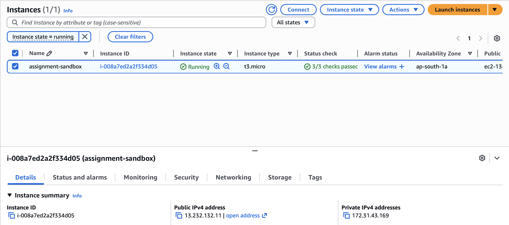
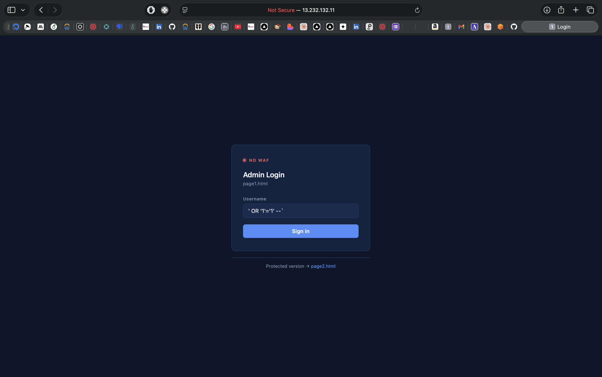
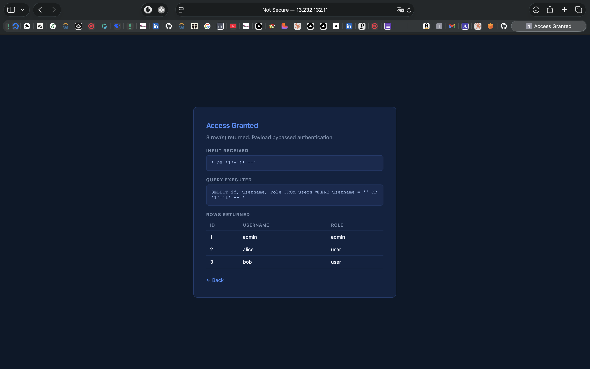
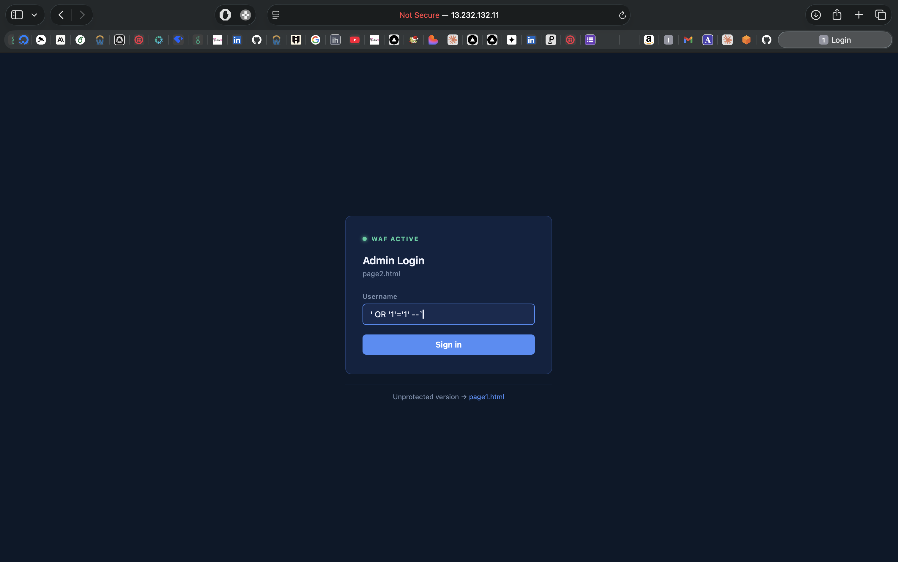
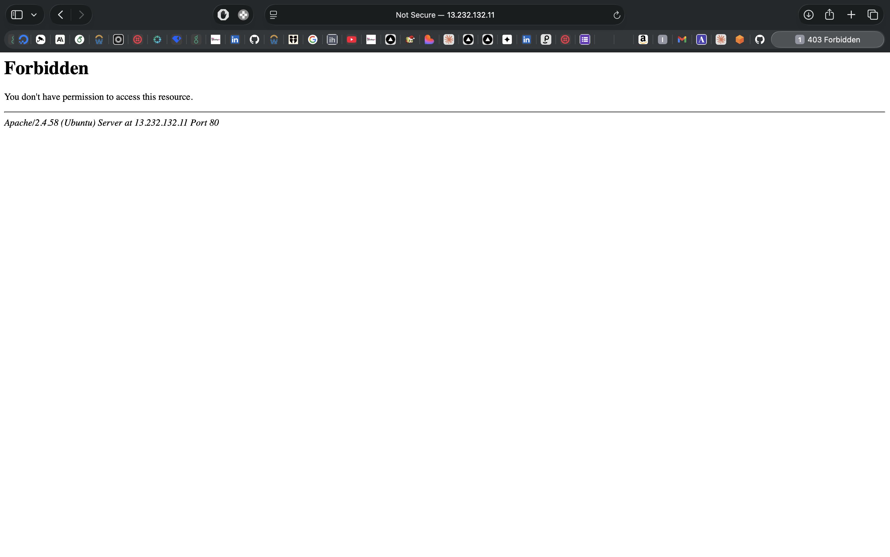
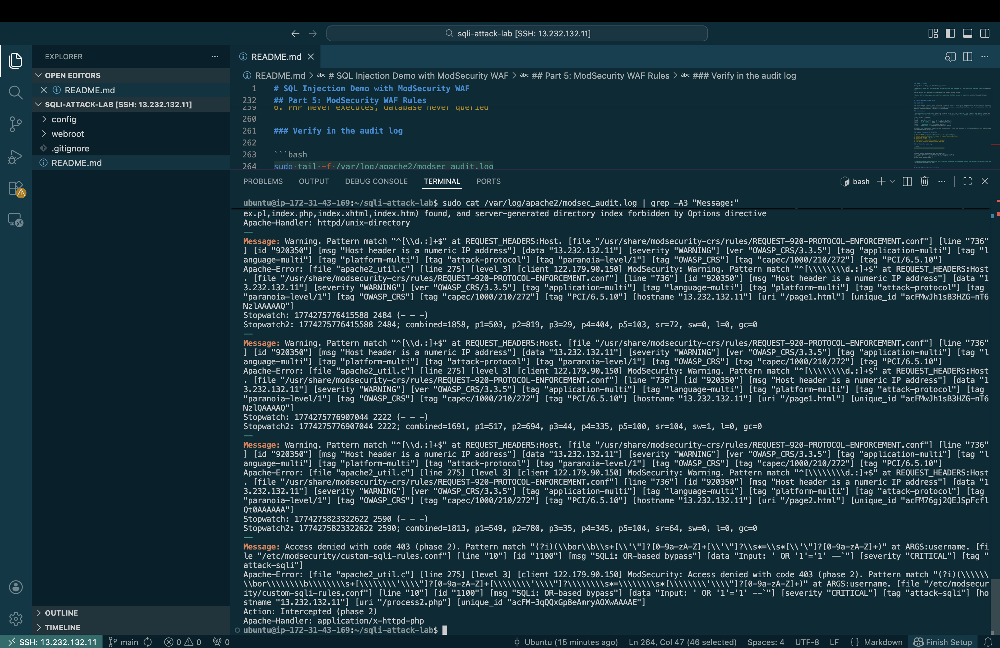

Demonstrates a SQL injection vulnerability and its WAF-based mitigation on AWS EC2. Two login pages hit the same vulnerable PHP backend. ModSecurity is disabled for page1 and enforced for page2 at the Apache layer.
| URL | |
|---|---|
| Exploitable | http://13.232.132.11/page1.html |
| Protected | http://13.232.132.11/page2.html |
Stack: Ubuntu 24.04 LTS, Apache 2.4, PHP 8.3, SQLite3, ModSecurity v2, OWASP CRS v3.3
sqli-waf-demo/
├── webroot/
│ ├── page1.html login form, no WAF
│ ├── page2.html login form, WAF active
│ ├── process1.php vulnerable backend, WAF bypassed
│ ├── process2.php vulnerable backend, WAF enforced
│ └── setup_db.php seeds the SQLite database
├── config/
│ ├── sqli-demo.conf Apache VirtualHost
│ └── custom-sqli-rules.conf ModSecurity SQLi rulesGo to AWS Console > EC2 > Launch Instance
Configure:
assignment-sandboxt3.microassignment-sandbox, download the .pemUnder Network settings, create a security group with these inbound rules:
| Type | Port | Source |
|---|---|---|
| SSH | 22 | My IP |
| HTTP | 80 | 0.0.0.0/0 |
Launch and wait for both status checks to pass
Note the Public IPv4 address

chmod 400 ~/Downloads/assignment-sandbox.pem
ssh -i ~/Downloads/assignment-sandbox.pem ubuntu@13.232.132.11sudo apt-get update && sudo apt-get upgrade -y
sudo apt-get install -y apache2 php libapache2-mod-php php-sqlite3 \
libapache2-mod-security2 modsecurity-crs
sudo a2enmod security2sudo cp /etc/modsecurity/modsecurity.conf-recommended /etc/modsecurity/modsecurity.conf
sudo sed -i 's/SecRuleEngine DetectionOnly/SecRuleEngine On/' /etc/modsecurity/modsecurity.conf
sudo sed -i 's/SecRequestBodyAccess Off/SecRequestBodyAccess On/' /etc/modsecurity/modsecurity.conf
sudo sed -i 's/SecAuditEngine Off/SecAuditEngine RelevantOnly/' /etc/modsecurity/modsecurity.confCheck that CRS is wired into Apache’s security2 module:
cat /etc/apache2/mods-available/security2.confIf there is no line referencing modsecurity-crs, add
it:
echo "IncludeOptional /usr/share/modsecurity-crs/*.load" | \
sudo tee -a /etc/apache2/mods-available/security2.confcd ~
git clone https://github.com/utkarshrai2811/sqli-attack-lab.git
cd sqli-attack-lab
sudo rm -f /var/www/html/index.html
sudo cp webroot/* /var/www/html/
sudo mkdir -p /var/www/html/db
sudo chown www-data:www-data /var/www/html/db
sudo chmod 750 /var/www/html/db
sudo chown -R www-data:www-data /var/www/htmlsudo cp config/custom-sqli-rules.conf /etc/modsecurity/The /etc/modsecurity/ directory is glob-included by
Apache’s security2 module, so the file is picked up automatically. Do
not add an explicit Include line for it in
modsecurity.conf – that causes a duplicate-load error on
configtest.
Confirm no duplicate include exists:
grep "custom-sqli" /etc/modsecurity/modsecurity.conf
# should return nothingIf it returns something:
sudo sed -i '/custom-sqli-rules/d' /etc/modsecurity/modsecurity.confsudo cp config/sqli-demo.conf /etc/apache2/sites-available/
sudo a2dissite 000-default.conf
sudo a2ensite sqli-demo.confThe VirtualHost config is the core of the demo.
SecRuleEngine Off on process1 lets the injection through.
SecRuleEngine On on process2 enforces the rules.
<VirtualHost *:80>
DocumentRoot /var/www/html
SecRuleEngine On
<Directory /var/www/html>
Options -Indexes
</Directory>
<Location /process1.php>
SecRuleEngine Off
</Location>
<Location /process2.php>
SecRuleEngine On
</Location>
<Directory /var/www/html/db>
Require all denied
</Directory>
</VirtualHost>sudo apache2ctl configtest
# must say: Syntax OK
sudo systemctl restart apache2curl http://localhost/setup_db.php
# output: Done. Users created: admin, alice, bob
sudo chown www-data:www-data /var/www/html/db/users.db
sudo chmod 640 /var/www/html/db/users.dbThe backend query on both pages is:
$query = "SELECT id, username, role FROM users WHERE username = '$username'";
$result = $db->query($query);User input is concatenated directly into the SQL string. The database cannot distinguish the intended SQL from attacker-injected SQL.
Payload: ' OR '1'='1' --
The query becomes:
SELECT id, username, role FROM users WHERE username = '' OR '1'='1' --'OR '1'='1' is always true. -- comments out
the rest. Every row in the table is returned, bypassing
authentication.
Navigate to http://13.232.132.11/page1.html, enter
' OR '1'='1' --, submit.

The response shows the injected query and all rows returned from the database.

Same payload on http://13.232.132.11/page2.html.

Apache returns 403. ModSecurity intercepted the request before PHP ran.

The installed CRS 942xxx group covers SQL injection
broadly: tautologies, UNION attacks, blind injection, benchmark/sleep
probes, and comment obfuscation. It operates in anomaly scoring mode –
requests accumulate a score across matched rules and are blocked when
the inbound threshold (default: 5) is exceeded.
config/custom-sqli-rules.conf adds five targeted rules
with IDs 1100-1104. The 900xxx and
999xxx ranges are reserved by CRS setup rules and will
cause a duplicate-ID error on configtest. IDs below
10000 that are not already claimed are safe.
| ID | Pattern | Targets |
|---|---|---|
| 1100 | \bor\b ... = ... |
' OR '1'='1', or 1=1 |
| 1101 | --, #, /* */ |
admin'--, comment injection |
| 1102 | union.*select |
UNION-based data extraction |
| 1103 | ; drop/insert/... |
Stacked queries |
| 1104 | @detectSQLi |
libModSecurity heuristic parser |
Rule 1104 uses ModSecurity’s built-in SQL syntax engine rather than a regex. It catches encoding tricks and whitespace obfuscation that pattern-based rules miss.
username=' OR '1'='1' -- to
/process2.phpOR '1'='1'--sudo tail -f /var/log/apache2/modsec_audit.logMessage: Access denied with code 403 (phase 2).
[file "/etc/modsecurity/custom-sqli-rules.conf"] [id "1100"]
[msg "SQLi: OR-based bypass"] [data "Input: ' OR '1'='1' --"]
Action: Intercepted (phase 2)
All bypass authentication on page1 and are blocked on page2:
| Payload | Technique |
|---|---|
' OR '1'='1' -- |
OR tautology |
admin'-- |
Comment truncation |
' OR 1=1-- |
Numeric tautology |
' UNION SELECT 1,username,role FROM users-- |
UNION extraction |
'; DROP TABLE users;-- |
Stacked destructive query |
HTML and PHP changes take effect immediately after copying, no restart needed:
sudo cp webroot/page1.html /var/www/html/page1.htmlApache config changes:
sudo systemctl reload apache2ModSecurity rule changes require a full restart since rules are loaded at startup:
sudo cp config/custom-sqli-rules.conf /etc/modsecurity/
sudo systemctl restart apache2configtest: “Found another rule with the same id” Custom rules file loaded twice. Remove the duplicate include:
sudo sed -i '/custom-sqli-rules/d' /etc/modsecurity/modsecurity.conf
sudo apache2ctl configtestpage1 returning 403
grep -A3 "process1" /etc/apache2/sites-available/sqli-demo.conf
sudo systemctl reload apache2PHP cannot write to the database
sudo chown www-data:www-data /var/www/html/db /var/www/html/db/users.db
sudo chmod 750 /var/www/html/db && sudo chmod 640 /var/www/html/db/users.dbAudit log empty after sending a payload
grep "SecAuditLog " /etc/modsecurity/modsecurity.conf
sudo tail -f /var/log/apache2/modsec_audit.logThe correct fix at the code level is a parameterized query:
$stmt = $db->prepare("SELECT id, username, role FROM users WHERE username = :u");
$stmt->bindValue(':u', $username, SQLITE3_TEXT);
$result = $stmt->execute();The WAF provides defense-in-depth. It is not a substitute for safe queries.